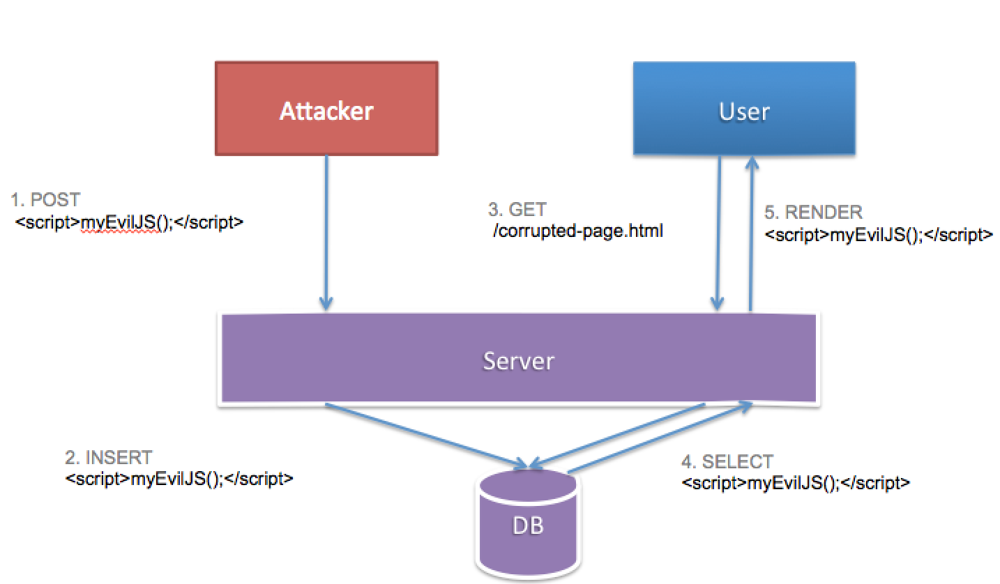
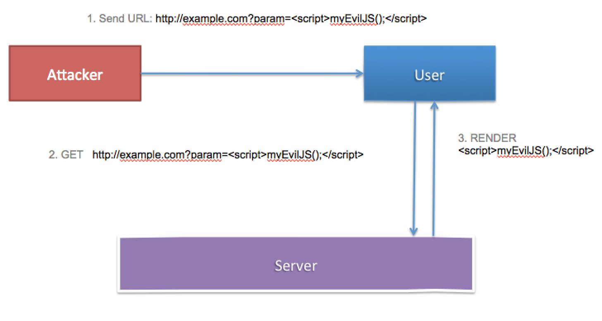
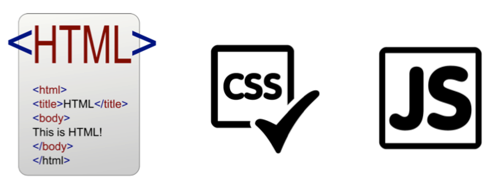

Cross Site Scripting
OWASP #3
What is XSS? The Simple definition
JavaScript, HTML, or CSS where it doesn’t belong messing with your app.
Persistent XSS

Persistent XSS
Persistent XSS is, by definition, stored on a server somewhere and delivered
out-of-band. I
think of it as the avatar or comment-page vulnerability:
Imagine you could put any unrestricted content in a facebook post, including
JavasScript, CSS,
HTML, etc. You could set your profile to contain JavaScript that would, for example
Prompt for a username and password
Steal session information
Show and/or hide different parts of the page
You save it in one session and it appears to users in another. Depending on the level of
auditing and anonymity of posting, finding the source of the problem would be very
challenging
Reflected XSS

Reflected XSS
Reflected XSS can be dangerous but cannot be delivered asynchronously like a persistent
XSS attack
In this case, the dangerous payload must be delivered via GET parameters or POST
payload
That means the attacker needs to send you a link, directing you to an endpoint they
control in
some way, perhaps via email or IM. You click on that link, and the malicious content
from the
URL is rendered to the page
The effect of server and client reflected XSS is basically the same, but implementing
controls
is a bit different because of where the they exist.
Client is by definition in JavaScript
Server is whatever your server-side web application platform
The only difference between client and server reflected is the mechanism by which the attacker
content is included in the page. For server-reflected, a GET, POST, header, param, whatever is
included during server-side page rendering.
For DOM-based, JS is rendering things params or cookies directly into the page.
The former is tricky because there are more ways to create this vulnerability. You can render
anything in the request, really.
The latter can only be via GET parameter, cookies and headers (if using Ajax). Data like POST
body isn’t accessible.
Either way, the effect is the same, attacker content is “bounced” through the request onto the
page.
Why does XSS happen?
The line between executable code and data is murky.
Let's say you show your product owner a XSS vulnerability, and they say, "So what?"
Did you touch on...
Confidentiality?
Integrity?
Availability?
Availability is not as much a concern. It may be used as a stepping stone towards poor availability but it's not a main concern.
Defending against XSS
Input validation
Output encoding
Safe script includes
Avoid mixed contexts
Avoid "unsafe" JavaScript like eval() and innerHTML
Input Validation: Basic Case
Input
Output
42
2a
2001
7da
<script>alert(“gotcha”);</script>
???
More Complex Cases
A web-based email client
A web-based ssh client
Or, heaven help you, a web-based HTML editor
In these cases, you don’t have the luxury of eliminating huge swaths of characters. So it is
worth limiting your input as much as possible, but now you are reliant on output encoding.
Output encoding is much trickier and harder to practice the positive modeling that I recommend
so heavily.
Black-listing is very hard to get right, particularly given the complexities of International
character sets which you most likely need to support.
Instead you may be force to take in a wide range of input, but control what is rendered. At this
point context is critical.
To give you a taste of the different types of contexts you need to be aware of…. NEXT SLIDE
Browser Rendering Contexts
HTML context
HTML attribute context
JavaScript context
JavaScript string context
CSS context
JSON entity context
URL context
Each of these contexts is governed by a different set of rules. For example, what happens when an attacker manages to squeeze a less-than and greater-than into an HTML page? Or a quote into a bit of JS?
To make things worse, these contexts can be nested and the complexity increases dramatically.
What is Output Encoding?
Escaping characters and sequences so they do not render in the wrong context

HTML Output Encoding
$attackerInput="<img src='http://evil.org/deface.gif'>"
<p>$attackerInput</p>
$attackerInput="<img src='http://evil.org/deface.gif'>"
Un-encoded
<p><img src='http://evil.org/deface.gif'></p>
Encoded
<p><img src='http://evil.org/deface.gif'></p>
JavaScript Output Encoding
$attackerInput="\"); alert('gotcha');//"
<script>
doSomething("$attackerInput");
</script>
Unescaped
<script>
doSomething(""); alert('gotcha');//");
</script>
Escaped
<script>
doSomething("\x22\x29\x3B\x20alert\x28\x27gotcha\x27\x29\x3B\x2F\x2F");
</script>
True or False
Even if you skip most input validation, good output encoding will save you from most XSS.
True or False
If you have really good input validation, you can skip output encoding layer.
True or False
It's okay to do input validation or output encoding.
False. It's always better to do both when you can, but output encoding is more important.
When should you create your own encoder?
Don't unless you really have to. Popular encoders are included in the resources.
What makes defending against XSS hard?
What makes defending against XSS hard?
Large number of factors to think about
Types of input to the HTTP request
Identify all the places where data will be included in the HTML
A defense that works in one context may not work in another
HTML attribute VS Javascript variable assignment
A defense that works with one kind of input will not work for another
Validation and encoding for a username VS sanitization for untrusted HTML
Feedback?
What went well? Not so well? Suggestions/Questions?